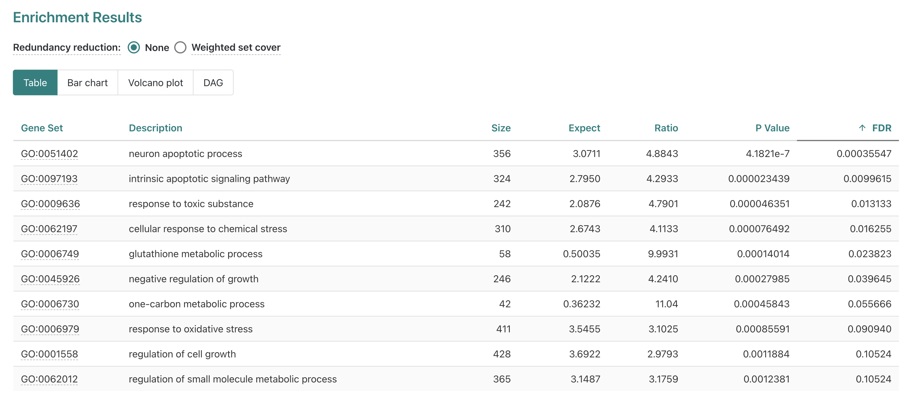

Introduction to functional enrichment with WebGestalt
## [1] "/home/workshop/damki/workshop-intro-functional-analysis/source"Objectives
- Introduce “point and click” option for running functional enrichment
- Run over representation analysis (ORA) using WebGestalt’s browser interface
- Understand results and outputs for ORA on bulk RNA-seq data
…
Getting started with functional enrichments
We’ve discussed some of the motivations and general types of approaches for performing functional enrichment analysis, but what tools can we use to perform these kinds of analyses?
While there are many tools available, WebGestalt (WEB-based GEne SeT AnaLysis Toolkit) is an approachable option since it includes a web-based interface that doesn’t require any programming knowledge. It also offers several methods for enrichment analysis, can run enrichments for data from a range of organisms, and the authors have recently updated the tool including expanding what analytes are supported.
We’ll start by reviewing the WebGestalt’s browser interface, focusing on RNA as our analyte and familiarizing ourselves with the options available via the browser interface before submitting our own functional enrichment.
WebGestalt interface
If we navigate to the WebGestalt homepage, we can see that it has several sections. At the top, is the main navigation menu, which includes links including to the Manual, Citation, a User Forum, and a link to the 2019 version of the tool.

Then, the main section is the left side of the “Basic parameters” box, which includes prompts for:
- “Method of Interest” - allows selection of which approach to use for
functional enrichment, like over-representation Analysis.
- “Organism of Interest” - selection includes humans, mouse, rat, plus
other several other model organisms.
- “Functional Database” - allows selection of functional/biological knowledge database that will be compared to the input data.
There is also an area on the right where example inputs are provided for the supported analytes/functional database combinations, which can be useful to understanding what format or other attributes for the inputs are required to run the tool. Since we’ll be running the tool together, we’ll skip the example inputs section for now.

If we scroll down slightly then we can see a box for providing inputs to WebGestalt, which includes prompts on the left side of the page for:
- “Analyte Type” - allows selection of what was measured in the
experiment; for the workshop we’ll only be using data from experiments
that fall into the
Gene/Proteincategory.
- “Upload ID List” - option to upload a file with input genes
that will be queried.
- “Input ID List” - option to paste in list of input genes that will be queried.
On right side are prompts for:
- “Select Reference Set” - options to select general
reference/background gene set options.
- “ID type for uploaded reference list” - allows select of ID type for
a user provided reference/background gene set.
- “Upload User Reference Set Fle” - allows users to upload a file containing a custom reference/background gene set.
Below that, there is a area labeled “Advanced parameters”, that allows some changes to the default options multiple hypothesis correction method and significance cutoff, but we’ll also skip that section for now.
WebGestalt browser demonstration
Together we’ll walk through the steps to run an over representation analysis (ORA) for bulk RNA-seq results from our RNA-seq demystified workshop.
Input data
The comparision between deficient vs control mice using DESeq2
generated statistics for each gene; the table of results
(de_deficient_vs_control_annotated.csv) had the following
columns:
id: The ENSEMBL gene identifier.symbol: The gene symbol.baseMean: The average expression of the gene across all samples.log2FoldChange: The log2 fold change in expression between the deficient and control samples.lfcSE: The standard error of the log2 fold change.stat: The test statistic for the differential expression test.pvalue: The p-value for the differential expression test.
A key attribute of the output table from the original analysis is that includes statistics for all genes included in the comparison, not just those that are differentially expressed.
Behind the scenes, we used the same thresholds as the original
analysis for the log2FoldChange and pvalue
columns to identify DE gene. Then we created a list of the IDs for the
DE genes, using the gene column, and output that list to
file. We’ll re-create this file together in the next section, but for
simplicity we’ll accept this pre-made file of DE genes as an input to
use for the web browser version of WebGestalt.
Running WebGestalt with our bulk RNA-seq results
First, we’ll navigate back to the top section of the
Basic parameters section of the WebGestalt browser
interface. The default Method of Interest is
“Over-Representation Analysis” which also happens to be the type of
functional enrichment we want to run right now, so we’ll keep that
default option.

For Organism of Interest, since our data is from a mouse
experiment we want to select Mus musculus to have the
appropriate knowledge bases of functional gene sets available for
selection.
For Functional Database, we’ll select
geneontology as the category which means we’ll be using
functional/biological gene sets from the gene ontology (GO) annotations
or per the GO consortium website a “network of biological classes
describing the current best representation of the ‘universe’ of biology”
via the AmiGO 2
database.
When we choose geneontology, a sub-menu pops up and
prompts us to select a funcition database name.

If we click the sub-menu, a list of options pops up. We’ll select the
Biological Process noRedundant which per WebGestalt’s manual is an
option the authors created “used an algorithm to remove redundant terms”
and is a version of the public Biological Process GO terms that “only
contain[s] non-redundant terms”.
Now that we’ve selected the knowledge base of functional/biological gene sets, we can scroll down to the next section of the page to specify the inputs for our enrichment analysis.

To upload our DE genes as the input/interest list, we’ll share a text file on slack that you will need to download to use as the input file. After you’ve downloaded the file and located it in the download folder on your computer, put up a green check.
Once we have the input file downloaded, we’ll select the
click to upload option next to the
Upload ID List label.

This should open up a prompt that shows the file navigator/finder for
your computer. Use the prompt to navigate to your download folder and
select the deficient_DE_GeneList.txt file that we shared
via slack.

After selecting the file, you should now see the
deficient_DE_GeneList.txt file name inside a small square
next to the upload option.
Now that we’ve specified our interest list of DE genes for the
enrichment, we’ll need to specify what reference (a.k.a. background)
gene list should be used. To use one of the built-in background
reference gene sets, we’ll click the menu next to
Select Reference Set.
If we scroll down we’ll see genome protein-coding, which
is an appropriate background reference to use since a polyA library prep
approach used that means we expect protein-coding mRNAs were measured in
our experiment so we’ll select that option.
After selecting genome protein-coding as our background
reference, we should we that displayed on the page and see how the
alternative options, which allow for a custom background reference to be
used, are greyed out.

Now let’s double check each section - put up a green check after you’ve reviewed and confirmed your selections match the instructor’s.
Once we’ve double-checked that our selections match, then we will
submit the job to WebGestalt using the Submit button.
Overrepresentation results for bulk RNA-seq data using WebGestalt
Let’s look through the results from WebGestalt for our ORA (Over Representation Analysis) analysis. We can use the web-interface or a static version of the html report, which one of the files that might be shared by a collaborator.
As a reminder - these results were generated from the DE genes for our bulk RNA-seq experiment, which compared gene expression between erythroblasts, cells that make red blood cells, isolated from wild-type mice fed an iron deficient versus those isolated from wild-type mice fed a control diet.
Once the submission has run, we see an html format interactive result
displayed. We’ll navigate through the sections of the report together,
starting with the Job summary.
Note - if we can’t look at the results live, there is a copy of the results available [ADD LINK HERE].

Within the Job summary drop down menu, WebGestalt
summarizes the data that was submitted and the enrichment parameters.
The bulk RNA-seq had 189 DE genes in total but only 180 genes mapped to
gene symbols from the tool’s reference (entrezgene) and
then only 125 genes were annotated to the functional categories selected
for this analysis, which was
geneontology_Biological_Process_noRedundant.
We can also see that the reference list we selected from the
available options had 14,490 entrezgene IDs of the total gene list
mapped to functional categories within the functional categories we
selected. From here, we can scroll down to see the
Enrichment Results section.
The report displays a Bar chart first in this section.
In the plot we can see along the y-axis the top 10 enriched GO-terms for
our submitted DE genes from the non-redundant Biological Process GO-term
set, which is the default number of terms to display.
While 10 terms are reported, only 6 are significant after FDR
correction for multiple hypothesis testing which is indicated by color
(dark blue = FDR < threshold, light blue = FDR < threshold). The
length of the bars for each GO term is determined by the “Enrichment
ratio” which we’ll look at more closely by navigating to the
Table display option, next to the selected
Bar chart option above the plot key.

If we look at the table option next, we can see more detailed information provided for each of the 10 gene sets included in our results.
Gene set- Accession number for the GO term.
Description- Descriptive label (for Biological function in this case).
Size- Total number of genes annotated for that term.
Expect- Number of genes expected to be DE for that term based on chance.
Ratio- Ratio of observed DE genes over expected for term.
P Value- Nominal p-values from statistical comparison, risk of false positives due to number of tests performed.
FDR- False Discovery Rate corrected p-values, default method is Benjamini-Hochberg (BH).
Now that we have a better understanding of the results table, let’s
change the ranking to be by Ratio.
When we rank the table by Ratio, we see that the top
significant (FDR =< 0.05) gene set is
glutathione metabolic process with the
GO:0006749 set ID highlighted as a link. Let’s click on the
link for GO:0006749 to see what information that gives us
for the glutathione metabolic process.
Individual GO-term examples
When we click the GO term accession number, the page jumps to a new
section that displays more details for the
glutathione metabolic process enrichment.

Within this section we see several familiar fields on the top left,
including the FDR and Enrichment ratio values
for this enrichment. We also see the overlap number between the input
(a.k.a. interest or query) DE genes and the reference
functional/biological gene set reported which is how the
enrichment ratio is calculated.
On the right we see a diagram showing the number of overlapping genes in the center (5) and then the total number of mapped input DE genes (125) and the total number of genes annotated for the reference (58).
To get more information about the reference term, let’s click on the
GO:00067491 link.
That links out to the AmiGO2 entry for
glutathione metabolic process, which provides some
additional details but isn’t necessarily tailored to our specific
enrichment (e.g. limited to mouse).
After reviewing the AmiGO2 page, let’s navigate back to the results.
Based on the experimental design, is finding a enrichment for a metabolic process surprising? Is it surprising to find that this specific process is enriched?
Let’s go back to the table and look at some of our other enriched
results, selecting the
intrinsic apoptotic signaling pathway next.
For the intrinsic apoptotic signaling pathway, we see a higher number of genes overlapping but also a smaller enrichment ratio since the reference gene set and the expected DE genes are larger.
Is this enrichment surprising to find for erythroblasts? What does this enrichment suggest about the impact of a iron-deficient diet?
Let’s go back to the table to look at our other results. A
potentially unexpected results is the significant enrichment of
neuron apopotic process for data generated for blood cell
progenitors, so let’s select that term next.
When we look the neuron apoptotic process, it looks like there are
some familiar genes from the
intrinsic apoptotic signaling pathway which might explain
why this term is enriched. While the term is significant, it’s probably
not very informative since it obviously can’t apply to the cell type
assayed in this experiment and is unlikely to be worth including in the
main body of a paper.
Next, let’s click on the link in Entrez Gene ID to see more details about Bcl2l1.
DAG maps
When we look at the DAG map, we can see that some of the significant
terms are related, like
intrinsic apoptotic signaling pathway and
neuron apoptotic process. This can be useful for
interpreting why a GO term that’s unlikely to be applicable to the
experiment (e.g. neuronal process from non-brain tissue) might be coming
up as enriched.
WebGestalt documentation
A good practice when using a new tool is to read the documentation provided by the developers, which we can find by selecting Manual from the top of WebGestalt site.

At the top of the manual page, we can see an overview of some of the related publications as well as a comparison between an older 2019 version and the current 2024 version.
If we scroll down, then we can see a bit of an introduction to the tool. For the sake of time, we won’t go through the manual at this point but it’s a useful resource, particularly to search to find terminology that might not be familiar or that might have a specific definition specified by the authors.
Summary
- 1
- 2
- Using a point and click interface can lower friction of use but make documenting and sharing how to run the analysis more challenging.
| Previous lesson | Top of this lesson | Next lesson |
|---|